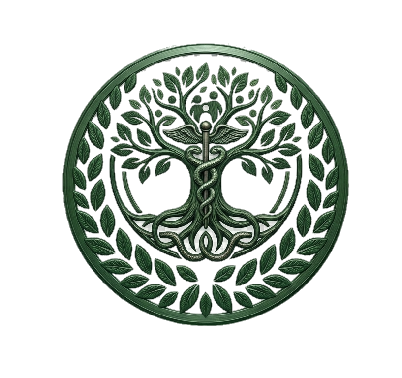

SALUD ANCESTRALE
Donde la ciencia escucha a los ancestros
🆕 Nuevas publicaciones: leyendas virales de la salud ancestral
Hoy estrenamos 5 historias apasionantes con base científica. Cada tarjeta tiene su propio botón de audio para escuchar la leyenda completa.
Miel Egipcia (leyenda viral)
🐝 ¡La miel cura 4,7 días antes que los apósitos!
Acupuntura (leyenda viral)
🧠 Las agujas que hablan con el cerebro
Cúrcuma (leyenda viral)
🔥 La especia dorada que vence al ibuprofeno
Pelargonium sidoides (leyenda viral)
🌿 La raíz zulú que conquistó Alemania
Azafrán (leyenda viral)
🌺 El antidepresivo natural más caro del mundo
Medicina Tradicional China
Acupuntura: más que placebo
Estudio: Vickers et al., Arch Intern Med 2012. Metaanálisis de datos individuales de 17.922 pacientes (29 ECAs)
Lugares: EE.UU., Alemania, Reino Unido, España.
Resultado: Diferencia significativa entre acupuntura real vs. simulada (p<0.001). Efecto mantenido a 12 meses.
GRADE: ModeradoDato extra: El punto P6 reduce vómitos post-quimio (Cochrane, certeza ALTA).
Medicina Ayurveda
Cúrcuma vs. ibuprofeno
Ensayo: Kuptniratsaikul et al., Clin Interv Aging 2014. N=367 pacientes en Tailandia.
Diseño: Cúrcuma 1.500 mg/día vs ibuprofeno 1.200 mg/día durante 4 semanas.
Resultado: No inferioridad en WOMAC. Menos efectos gastrointestinales (8.1% vs 16.9%).
GRADE: ModeradoCuriosidad: La ashwagandha también reduce cortisol y ansiedad (11 ECAs, 2022).
Medicina Zulú (Umckaloabo)
De raíz africana a farmacia alemana
Revisión Cochrane: Timmer et al., 2013. 8 ECAs, 1.640 pacientes.
Extracto: EPs 7630 de Pelargonium sidoides.
Resultado: Reducción de síntomas en bronquitis aguda (DME -0.70). Casi el doble de remisión al día 7.
GRADE: ModeradoHistoria: Aprobado en Alemania desde 1983 como medicamento.
Medicina Persa
Azafrán, tan eficaz como antidepresivos
Metaanálisis: Tóth et al., J Integr Med 2018. 11 ECAs, 524 pacientes.
Comparativa: Azafrán 30 mg/día vs fluoxetina/imipramina.
Resultado: Reducción depresión (DME -0.66 frente a placebo). No inferioridad.
GRADE: Moderado-bajoMecanismo: Safranal y crocina modulan serotonina y dopamina.
Medicina del Antiguo Egipto
Miel cicatriza quemaduras más rápido
Cochrane: Jull et al., 2015. 26 ECAs, 3.011 participantes.
Resultado clave: Cicatrización 4,7 días más rápida en quemaduras de espesor parcial.
Infección: Reducción del 55% en heridas quirúrgicas (RR 0.45).
GRADE: Alto (quemaduras)Dato curioso: Papiro Edwin Smith (~1600 a.C.) ya recomendaba miel para heridas.
☕ Apoya nuestro proyecto con una donación
Tu contribución nos ayuda a mantener y crear más contenidos científicos sobre medicina ancestral.
🌍 Medicinas tradicionales estudiadas
Estas son las cinco tradiciones médicas antiguas que hemos analizado con rigor científico.
- Medicina Tradicional China — Acupuntura, artemisinina, fitoterapia. Textos: Huangdi Neijing (~200 a.C.)
- Medicina Ayurveda — Cúrcuma, ashwagandha, yoga. Textos: Charaka Samhita (~300 a.C.)
- Medicina Zulú — Umckaloabo (Pelargonium sidoides). Tradición oral sudafricana.
- Medicina Persa — Azafrán, Nigella sativa. Textos: Avicena, Rhazes (s. IX-X).
- Medicina Egipcia — Miel para heridas. Textos: Papiro Edwin Smith, Papiro Ebers (~1600 a.C.)
🗓️ Artículos publicados
Próximamente encontrarás aquí artículos completos sobre cada hallazgo científico.
- Acupuntura y dolor crónico: el metaanálisis de Vickers (2012)
- Artemisinina: del texto de Ge Hong al Nobel de Tu Youyou
- Cúrcuma vs. ibuprofeno: el ensayo tailandés de 2014
- Miel egipcia: evidencia Cochrane para quemaduras
- Azafrán persa: tan eficaz como la fluoxetina
Del papiro al laboratorio
El viaje de los remedios ancestrales hasta el ensayo clínico moderno.
- Artemisinina (China): Ge Hong (340 d.C.) → Tu Youyou (1972) → Nobel 2015 → Tratamiento OMS para malaria.
- Aspirina (Sumeria/Egipto): Corteza de sauce (4000 a.C.) → Salicina (1828) → Aspirina (Bayer, 1897).
- Umckaloabo (Zulú): Raíz de Pelargonium sidoides → Extracto EPs 7630 → Medicamento aprobado en Alemania (1983).
- Miel (Egipto): Papiro Edwin Smith (~1600 a.C.) → Miel de manuka estandarizada → Revisión Cochrane (2015).
Sobre Salud Ancestrale
Este proyecto nace para tender puentes entre el conocimiento ancestral y la evidencia científica moderna.
- Objetivo: Divulgar hallazgos científicos contrastados procedentes de medicinas tradicionales antiguas.
- Método: Revisión sistemática de ensayos clínicos, metaanálisis y revisiones Cochrane.
- Valores: Rigor, respeto por las culturas originarias, y compromiso con la verdad científica.
- Aviso: Todo el contenido es informativo y educativo. No constituye consejo médico.
- Autor: RubyTools Instruments™